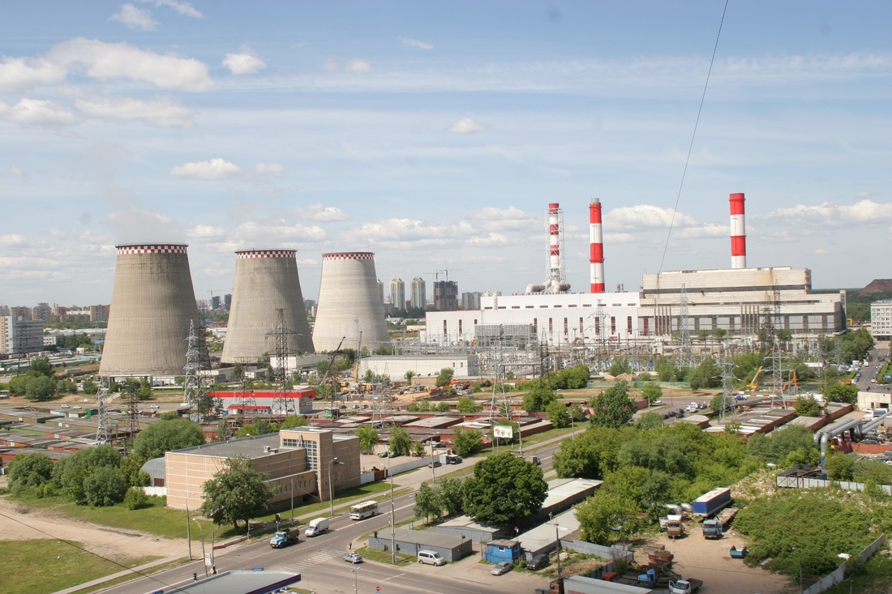

Industrial Revolution
The Industrial Revolution, now also known as the First Industrial Revolution, was the transition to new manufacturing processes in Europe and the United States, in the period from about 1760 to sometime between 1820 and 1840. This transition included going from hand production methods to machines.
